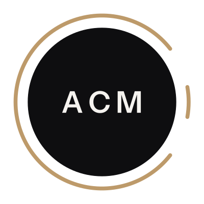

ACM OS
Aur
Versiunea 1.0 · canal stabil
Computer
MacBook Pro 13" (2010)
Procesor
Intel Core 2 Duo 2,40 GHz
Memorie
4 GB DDR3 1066 MHz
Grafică
NVIDIA GeForce 320M
Disc
SSD · 41 GB liberi din 120 GB
Baterie
●
Se încarcă · sănătate 78%
Raport sistem…
Drivere
Actualizări
ACM OS 1.1 se instalează
Fără reinstalare. Repornire de 8 secunde la final.
64% · aproximativ 1 minut
Tema Aur — ajustări dock
design
Google Chrome 142
aplicație
Driver audio Cirrus — volum mai mare
driver
Varianta A · Ivory — luminos, cald, ca o foaie de hârtie